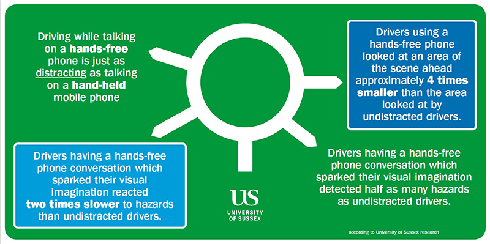
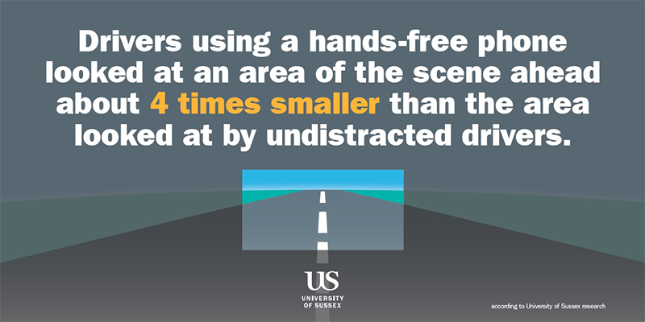
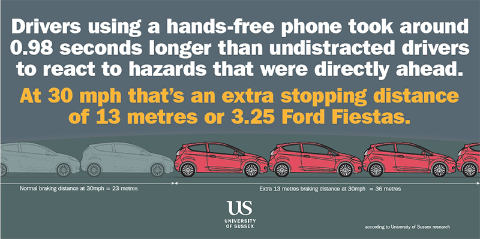
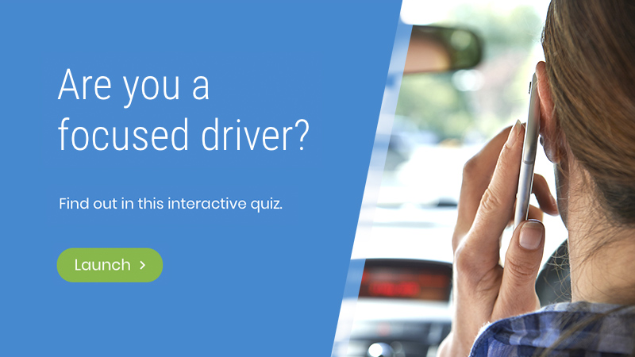

There is a body of research that suggests that mindful driving can improve driver awareness and increase driver safety. Many collisions on the roads are caused by failure to look properly or emotional/physical distraction. 1 in 5 new drivers will have a collision within the first six months of learning to drive. Failure to look properly is the largest collision factor for young Sussex drivers (and this is the same nationally).
Prefer no captions? View film | View transcript
We were delighted to work with the Road Safety Department of Brighton and Hove Council to see if Mindfulness can help. We have worked together with Sarah West, a local filmmaker to produce a short, engaging film that can be shown to young drivers to introduce mindfulness.
The aim of this short film is to target young drivers, demonstrating why the Mindfulness technique is worth using. It aims to introduce Mindfulness to drivers in order to give them a centring tool to help them fully engage with the road environment when they are driving, and not get distracted.
Road collisions are rarely accidents – someone has usually made a mistake, deliberate or otherwise. The largest cause of collisions – for all road users – is failure to look properly. As well as obvious distractions – mobile phones etc – people’s emotional state and busy lives affect how well they engage with the road environment. It affects their ability to spot risks and plan to avoid them.



Try this activity from the Open University to see how well you focus when distracted.

There is a specific penalty for mobile phone use (6pts, £200 fine) but this does not include other distractions – or using a hand held mobile which has been proved to be a very similar risk in research. Careless Driving (3pts, fine £100) can be used as an enforcement tool for distractions such as eating in the car, putting makeup on etc but these – along with campaigns and education – seem to have a limited effect on more core reasons for distraction and lack of awareness. We are used to multi-tasking and the car is seen as a safe place, especially when we are in our local area. This can lead us to drive on autopilot. In addition we are all subject to emotions, time pressures and the needs of others, as well as ourselves. Being in charge of a vehicle – even travelling at urban speeds – unwittingly can put us in charge of a dangerous blunt instrument. We need make sure we fully engage with our environment.
People who practise Mindfulness have been shown to be at lower risk on the roads. We have developed a simple practise to try before moving off, to enable better focus on the roads. This film is aimed at young drivers – who use their mobile devices more than most – but is applicable to all. It’s also useful for all road users – we all need to Share the Roads, Share the Responsibility – Mind in Gear.
See more about Brighton and Hove Road Safety
View a further selection of publications supporting mindfulness training for drivers
We've put together a page of useful resources for you to start exploring Mindfulness.
For more information about Road Safety please contact:
Keith.Baldock@brighton-hove.gov.uk